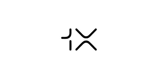

Private · Norway / USA
1X Technologies Company Profile
Home and workplace humanoids
1X Technologies facts
- Category
- Home and workplace humanoids
- Primary focus
- Humanoids
- Segments
- Humanoids
- Country
- Norway / USA →
- Type
- Private
- Ticker
- Not public / not listed
- Website
- Official website →
Robologai signal
1X Technologies is part of the humanoid robotics watchlist because its products, research, or market activity point toward general-purpose embodied labor. Tracked products include NEO.
Strategic Positioning
Why 1X Technologies matters to the physical AI economy.
Humanoids
1 intelligence tags attached to this profile.
Company Snapshot
Core signals Robologai tracks for 1X Technologies.
Product Lineup
Tracked robots and products associated with 1X Technologies.
Data Quality
Robot coverage, official sources, market type, and review status.
Source Notes
1X Technologies source trail.
Market Signal
How 1X Technologies fits into the robotics economy.
Related Companies